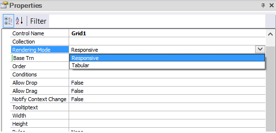

In Responsive Web Applications, free style grids have two modes to be drawn, which can be tabular (as an HTML table) or responsive (using tags DIV). Values
Description
 Run-time/Design-timeThis property applies only at design-time. AvailabilityThis property is available since GeneXus X Evolution 3 Upgrade 2. Scope Objects: Transaction, Web Panel See Also
|
| Backlinks |
| Columns property for free style grids in RWD |